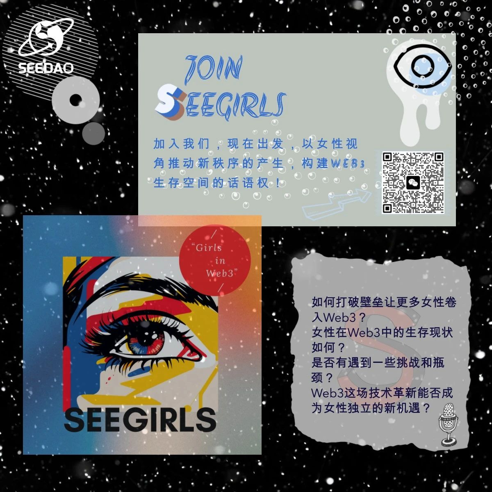
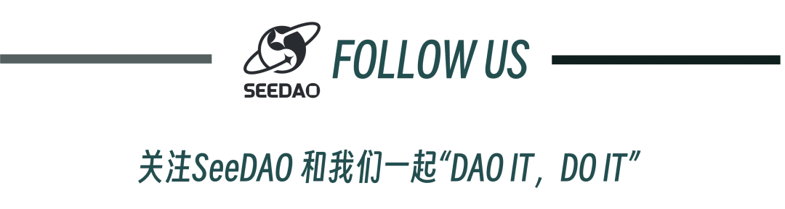

优雅入营，释放Web3女性力量！
作者: SeeDAO
分类:
SeeDAO, DAO, Web3女性, SeeGIRLS
SeeDAO一直以来非常关注Web3中女性成长的相关议题。最近第三期新手营SeeGIRLS战队的小伙伴正在SeeDAO内部推动成立一个纯女性Web3成员的公会。

SeeDAO一直以来非常关注Web3中女性成长的相关议题。最近第三期新手营SeeGIRLS战队的小伙伴正在SeeDAO内部推动成立一个纯女性Web3成员的公会。
在Web3世界的探索与建设中，我们已经可以看到越来越多的女性身影。那么，如今女性在Web3中的生存现状如何？是否有遇到一些挑战和瓶颈？WEB3这场技术革新是否能成为女性独立的新机遇？最近在推进公会成立的过程中与大家聊到了很多相关的议题。
首先一点，成立女性公会并不是制造性别对立，而是以女性视角来构建web3生存空间的话语权的问题。我个人认为女性主义衍生到最底层的逻辑应该是追求全人类平等并且承认性别不同带来的客观差异，只是在目前的社会中，女性普遍感受到了一些由于性别产生的发展受限和刻板印象。
已经进入Web3的女性应该就像灯塔一样，有机会引领其她女性进入这个新领域。公会会致力于解决比如资源缺乏、性别偏见、榜样树立和资金获取等方面的问题。Web3空间仍在发展，重要的是解决这些挑战，我们的愿景是想确保这个新的生存空间对所有性别都更加公平和包容。
大家应该可以观察到女性在社群中关注的项目，其内容、使命、目标和精神气质等方面与男性存在直接差异。与其他SeeDAO公会最大的不同是我们想建立一个以女性视角和兴趣导向的社群，其中孵化的项目，产品以及各种活动的组织，女生都能在其中扮演绝对重要的角色。公会也鼓励所有女性充分发挥自己的想象力，尽情展示自我，一起拓宽这个为女性量身打造的舞台。女性也可以推动新秩序的产生，而公会会成为女孩们身后的护城河。
就比如说，女性天生更厌恶风险，四分之三的加密货币持有者是男性，这意味着许多女性其实错过了一轮估值几万亿美元的市场。与传统行业一样，目前web3领域的资源还是向男性倾斜的。我们在思考要怎么做才能帮助女性打破进入的壁垒，使Web3真正成为每个人的新世界。这应该就是成立SeeGIRLS公会的初衷。
已经进入Web3的女性应该就像灯塔一样，有机会引领其她女性进入这个新领域。公会会致力于解决比如资源缺乏、性别偏见、榜样树立和资金获取等方面的问题。Web3空间仍在发展，重要的是解决这些挑战，我们的愿景是想确保这个新的生存空间对所有性别都更加公平和包容。
大家应该可以观察到女性在社群中关注的项目，其内容、使命、目标和精神气质等方面与男性存在直接差异。与其他SeeDAO公会最大的不同是我们想建立一个以女性视角和兴趣导向的社群，其中孵化的项目，产品以及各种活动的组织，女生都能在其中扮演绝对重要的角色。公会也鼓励所有女性充分发挥自己的想象力，尽情展示自我，一起拓宽这个为女性量身打造的舞台。女性也可以推动新秩序的产生，而公会会成为女孩们身后的护城河。
当前女性在互联网平台的角色大部分都是内容创建者，而不是底层技术的工程师。Web3对任何愿意在其中开发的人敞开怀抱，我们希望确保女性有与男性一样的资本化机会。很显然，在下一个版本的网络中，拥有技术技能可能不如吸引一群内容构建者那么重要了。因为Web3并不代表一种技术，就像我们生活在当前的Web2一样，我们生活在它涵盖的每个行业和生活的方方面面，Web3也是如此。Web3如何让自己有别于Web2以更多元、丰富？这个问题很大程度上取决于到底谁控制着构建内容的社区管道。比如元宇宙和 NFT 是基于社区发展的，而女性在社群和内容输出方面有自身优势，并且以女性为主导的社区更有爱互助，更团结，且更反功利性。女性在传统行业上的优势带到Web3当中是可以放大的。
目前我们组建了自己的活动群组，战队中的初始成员也逐步认领了核心贡献者的角色。公会试运营期间已成功举办了首期《围炉夜话》线上座谈会，并将定期每周二举办相关系列活动。
各种筹备中的项目，如种草社区，情感互助，灵魂测试，辩论大会，更有脱单联谊等丰富有趣的活动等你来参加。我们欢迎所有Web3女性加入SeeGIRLS，也欢迎对本公会感兴趣的男性作为观察员和协调员加入我们群组。
内容来源：Raven
排版：惠子
审核：Ines
